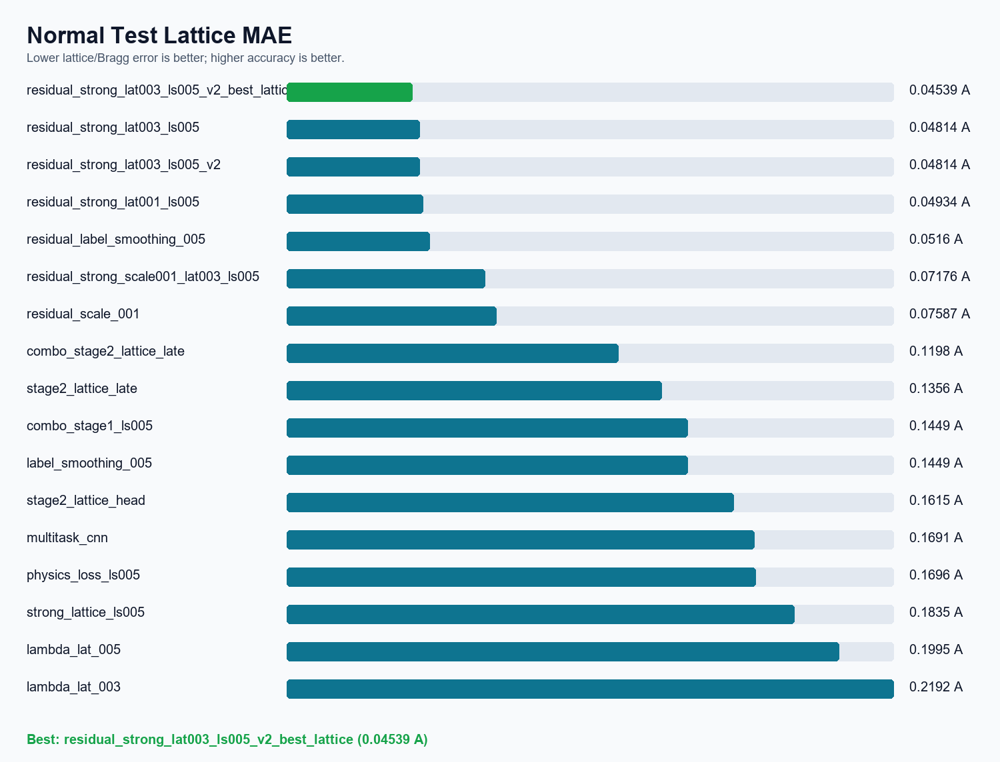
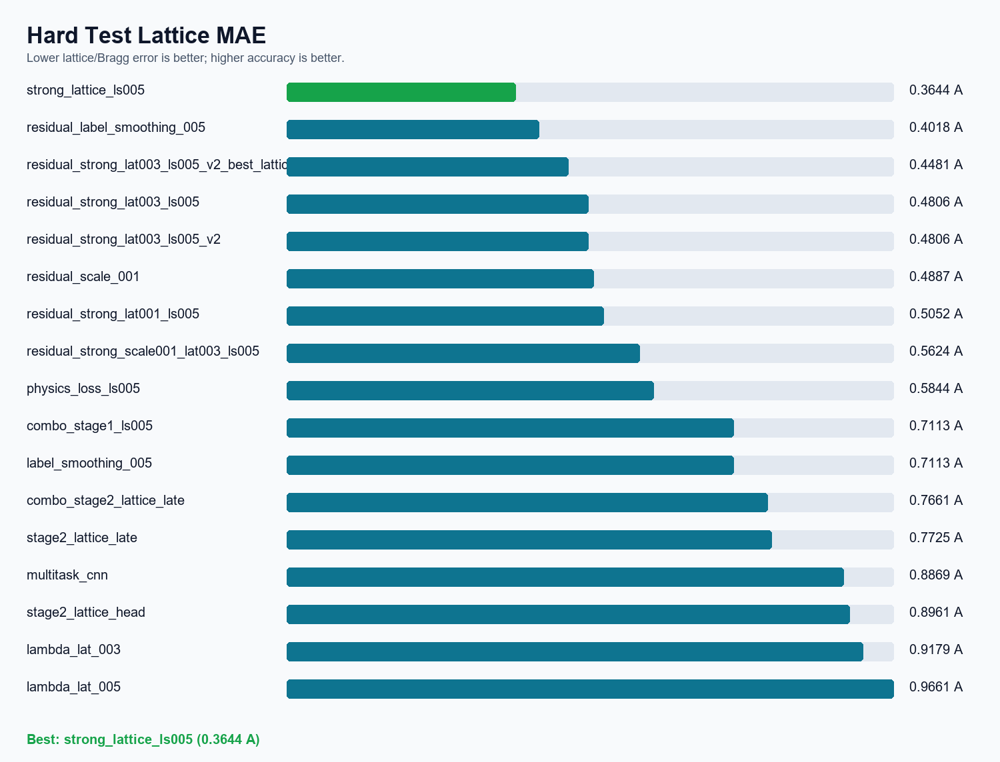
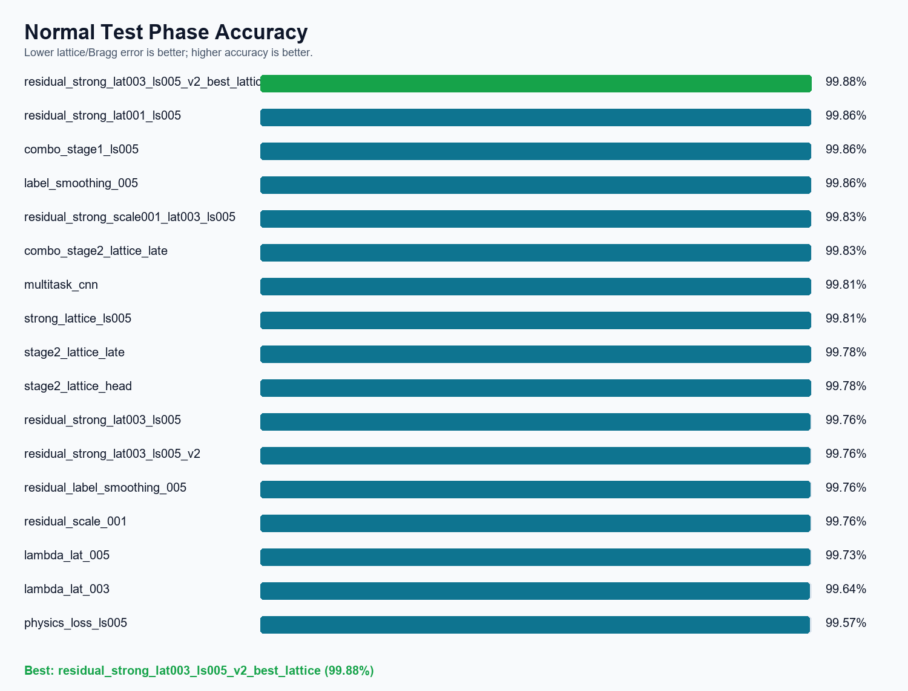
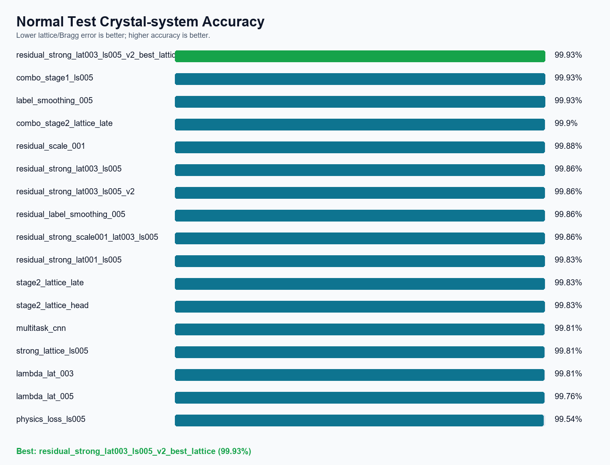
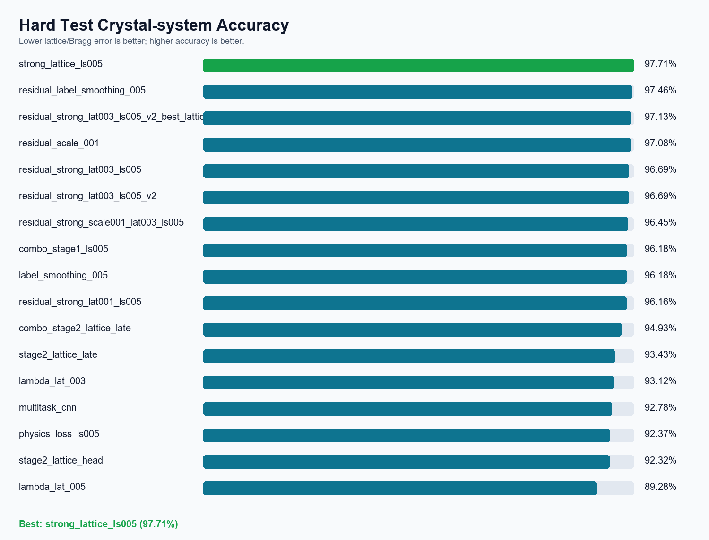

XRD Multi-task CNN Model Comparison
This dashboard compares the major model runs for phase classification, crystal-system classification, lattice regression, and Bragg-law consistency. The recommended selection prioritizes normal-set lattice precision because the normal split better represents realistic high-throughput characterization conditions.
99.758%Normal phase accuracy of recommended model
99.855%Normal crystal-system accuracy
0.0481 ANormal lattice MAE of recommended model
16Experiment summaries aggregated from metrics JSON
Recommended main model:
residual_strong_lat003_ls005. It provides the best normal-set lattice accuracy while keeping phase recognition highly accurate.




| Model | Main change | Normal phase | Normal crystal | Normal lattice | Normal Bragg | Hard phase | Hard crystal | Hard lattice | Hard Bragg | Recommendation |
|---|---|---|---|---|---|---|---|---|---|---|
residual_strong_lat003_ls005_v2_best_lattice |
V2 lattice-best checkpoint from epoch 40. | 99.8792% | 99.9275% | 0.04539 A | 0.311702 deg | 97.7295% | 97.1256% | 0.44811 A | 2.131811 deg | Recommended final checkpoint: best normal lattice MAE with excellent phase and crystal accuracy. |
residual_strong_lat003_ls005 |
Phase-residual plus strong lattice head, lambda_lat=0.03. | 99.7585% | 99.8551% | 0.048137 A | 0.307902 deg | 97.7536% | 96.6908% | 0.480591 A | 2.235116 deg | Recommended main model for normal precision and physics-informed workflow. |
residual_strong_lat003_ls005_v2 |
V2 run of phase-residual plus strong lattice head, 40 epochs. | 99.7585% | 99.8551% | 0.048137 A | 0.307902 deg | 97.7536% | 96.6908% | 0.480591 A | 2.235116 deg | Primary checkpoint selected by validation phase accuracy. |
residual_strong_lat001_ls005 |
Phase-residual plus strong lattice head, lambda_lat=0.01. | 99.8551% | 99.8309% | 0.049338 A | 0.306289 deg | 97.4155% | 96.1594% | 0.505225 A | 2.328049 deg | Best normal phase accuracy; normal lattice is also excellent. |
residual_label_smoothing_005 |
Phase-residual lattice, residual_scale=0.02. | 99.7585% | 99.8551% | 0.051595 A | 0.336339 deg | 97.6812% | 97.4638% | 0.401814 A | 1.977624 deg | Strong physics-informed story and excellent normal lattice accuracy. |
residual_strong_scale001_lat003_ls005 |
Phase-residual plus strong lattice head, residual_scale=0.01, lambda_lat=0.03. | 99.8309% | 99.8551% | 0.071762 A | 0.430943 deg | 97.1498% | 96.4493% | 0.562369 A | 2.591139 deg | Worse than residual_scale=0.02. |
residual_scale_001 |
Phase-residual lattice, residual_scale=0.01. | 99.7585% | 99.8792% | 0.07587 A | 0.472213 deg | 97.5604% | 97.0773% | 0.488685 A | 2.329101 deg | Residual scale is too conservative for deployable hard performance. |
combo_stage2_lattice_late |
Combination stage-2 late fine-tune. | 99.8309% | 99.9034% | 0.119779 A | 0.607287 deg | 97.1014% | 94.9275% | 0.766079 A | 3.357455 deg | Better than weak stage-2 runs, but not the final choice. |
stage2_lattice_late |
Stage-2 fine-tune late backbone and lattice head. | 99.7826% | 99.8309% | 0.135605 A | 0.679326 deg | 96.1594% | 93.43% | 0.772459 A | 3.4059 deg | Some improvement, but weaker than later methods. |
combo_stage1_ls005 |
Label-smoothing stage-1 run. | 99.8551% | 99.9275% | 0.14492 A | 0.741641 deg | 97.2705% | 96.1836% | 0.711338 A | 3.174191 deg | Similar role to label_smoothing_005. |
label_smoothing_005 |
label_smoothing=0.05. | 99.8551% | 99.9275% | 0.14492 A | 0.741641 deg | 97.2705% | 96.1836% | 0.711338 A | 3.174191 deg | Good classification improvement over baseline. |
stage2_lattice_head |
Stage-2 training of lattice head only. | 99.7826% | 99.8309% | 0.161489 A | 0.811012 deg | 95.4831% | 92.3188% | 0.896142 A | 3.922325 deg | Not useful in current setup. |
multitask_cnn |
Original multi-task CNN baseline. | 99.8068% | 99.8068% | 0.16908 A | 0.842701 deg | 95.7971% | 92.7778% | 0.886887 A | 3.943605 deg | Stable baseline; useful as the report reference point. |
physics_loss_ls005 |
Bragg physics loss with lambda_phys=0.1. | 99.5652% | 99.5411% | 0.169556 A | 0.694851 deg | 95.7488% | 92.3671% | 0.584355 A | 2.225291 deg | Not recommended; direct large physics loss harms classification. |
strong_lattice_ls005 |
Strong lattice head, lambda_lat=0.03, label_smoothing=0.05. | 99.8068% | 99.8068% | 0.183459 A | 0.964091 deg | 97.343% | 97.7053% | 0.364426 A | 1.686834 deg | Best hard-set lattice robustness among tested models. |
lambda_lat_005 |
Increase lattice loss weight to lambda_lat=0.05. | 99.7343% | 99.7585% | 0.199548 A | 0.987028 deg | 94.3478% | 89.2754% | 0.966145 A | 4.273735 deg | Not recommended alone; hard performance regressed. |
lambda_lat_003 |
Increase lattice loss weight to lambda_lat=0.03. | 99.6377% | 99.8068% | 0.219223 A | 1.101796 deg | 94.686% | 93.1159% | 0.917856 A | 4.027474 deg | Not recommended alone; hard performance regressed. |